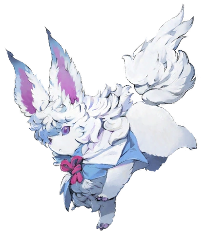

基于 FGO 世界观的用户头像方案 · 选择一个与「迦勒底档案室」视觉最契合的标识

芙芙（Fou）是迦勒底的吉祥物。方形 + 海军蓝边框 + 金色细边，与档案室"证件照"风格完美契合。
圆形版本——更接近游戏内通讯头像的样式，亲和感更强，但与系统整体的直角语汇略有冲突。
令咒是 Master 身份的终极象征。三画红色几何纹路 + 金色节点，在海军蓝圆底上辨识度极高。
仿游戏内通讯界面风格。圆形双环框（海军蓝 + 金环）+ 中心 Cinzel 字体「M」（Master）。极简优雅。
圣晶石是 FGO 最标志性的 UI 道具。蓝紫渐变菱形 + 十字光芒 + 金色描边，置于海军蓝圆底中。
Fate 系魔术师的标志——魔术回路。金色线路在海军蓝圆底上如电路般延伸，节点发光，暗示 Master 的魔力流动。
与 AI 侧 ⧫ 形成镜像对称。金色菱形外框 + 海军蓝内菱 + 中心「M」。Master 作为指挥者的身份标识。极简统一。